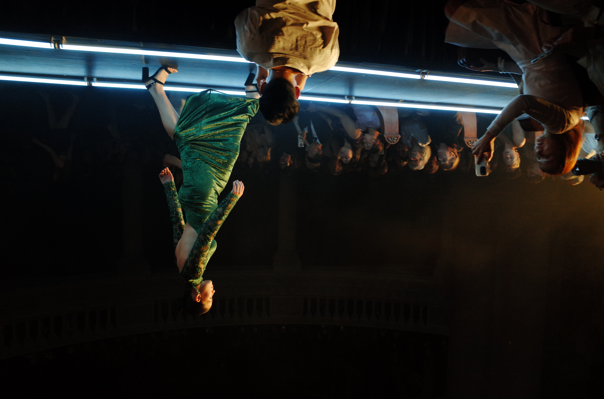
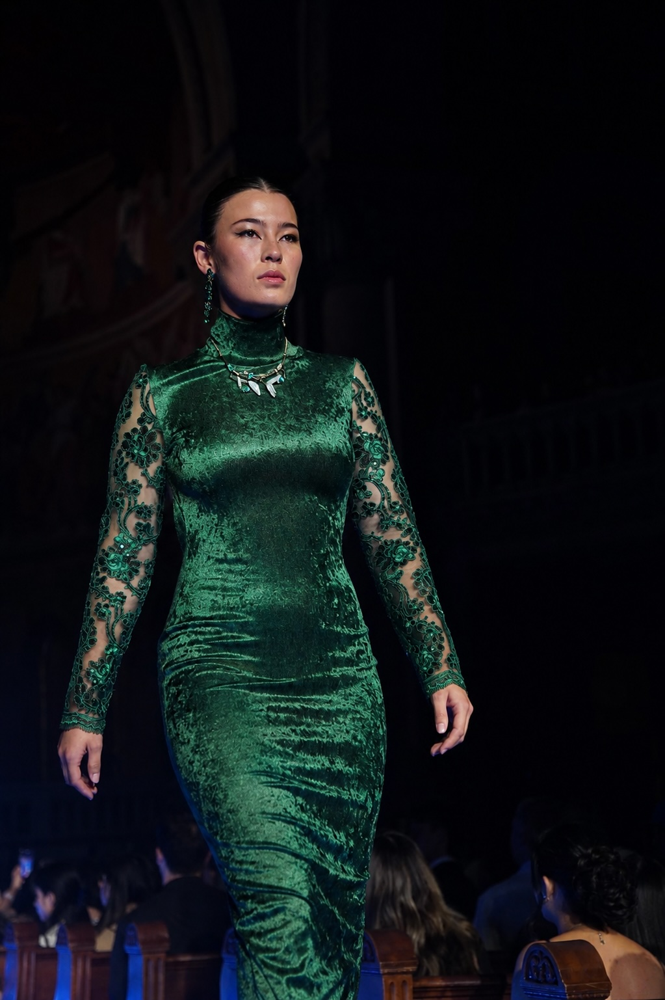
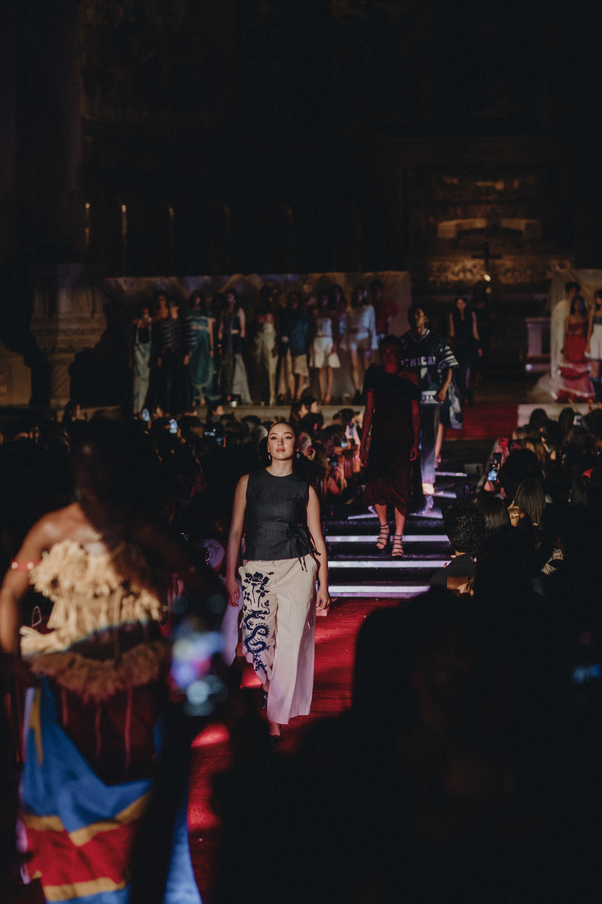

FashionX Runway
Runway is Stanford’s annual student-run fashion show and one of the largest student-produced events on campus. Every year, it brings together designers, stylists, models, and creatives for a night of original work.
Designers are given a theme and the freedom to interpret it however they want. The result is a wide range of student-made looks, from conceptual pieces to couture-inspired collections, created by students from disciplines across Stanford.
Carved in Jade


"The Mirror Stage"
This year's theme took a deep dive into the theories of Jacques Lacan — using concepts of self-reflection, identity formation, and the gaze as a creative spark. The historic venue provided a moody, cinematic backdrop for a night that pushed the boundaries of student-led fashion.
Carved in Jade approaches identity through the practice of carving — shaped as much by what is removed as by what remains.
Drawing from jade's cultural significance in Japanese tradition and its associations with purity, protection, and quiet strength, the look moves between restraint and revelation. A structured high neckline gives way to sheer tulle sleeves traced with lace appliqué and sequins, opening into a bare back that allows the body to become part of the composition. The lacework echoes the precision of carved jade, where negative space defines the form.
In dialogue with The Mirror Stage, the piece reflects a lush season of becoming. Modest yet striking. Covered yet exposed. Raw yet refined.
The look is built around a structured high neckline that transitions into sheer tulle sleeves, traced with lace appliqué and sequins. The lace is the garment's language — precise, patterned, and negative. Where the fabric opens into a bare back, the body becomes compositional. Each decision about what to leave uncovered mirrors the logic of carving: the material removed is as deliberate as the material kept.
Velvet body · sheer tulle sleeves · lace appliqué · sequin detail · open back · structured neckline
Porcelain in Motion


"Metamorphosis"
FashionX 2025 explored transformation — from history and tradition to a speculative future. Designers worked in algae, aluminium, peacock feathers, 3D-printed plastic, and mirror shards. The show opened with a live string orchestra tuning, before a Space Odyssey-inspired trumpet solo carried the audience into a soundscape built for metamorphosis.
Porcelain in Motion translates the fragile into the enduring — traditional Chinese porcelain motifs remade in the language of American workwear.
Canvas pants carry intricate felt appliqués drawn from decorative pottery patterns. A structured denim bodice brings rigidity and utility to forms usually associated with delicacy. The garment traces the evolution of cultural craftsmanship: what once shattered now holds its ground.
Fragile to enduring. Decorative to functional. Eastern tradition through a Western lens.


The look is built in two parts: wide-leg canvas pants covered in hand-applied felt appliqués — each one cut and placed to echo the intricate glaze work of Chinese blue-and-white porcelain — and a structured denim bodice that sits in contrast to the softness it frames. The appliqué work is the garment's core argument: that ornamentation and durability are not opposites, but partners.
Canvas pants · felt appliqué · structured denim bodice · hand-applied motifs · workwear silhouette
Studying how clothing is made is how I first understood it as a language — and these shows are where I learned to say something with it.